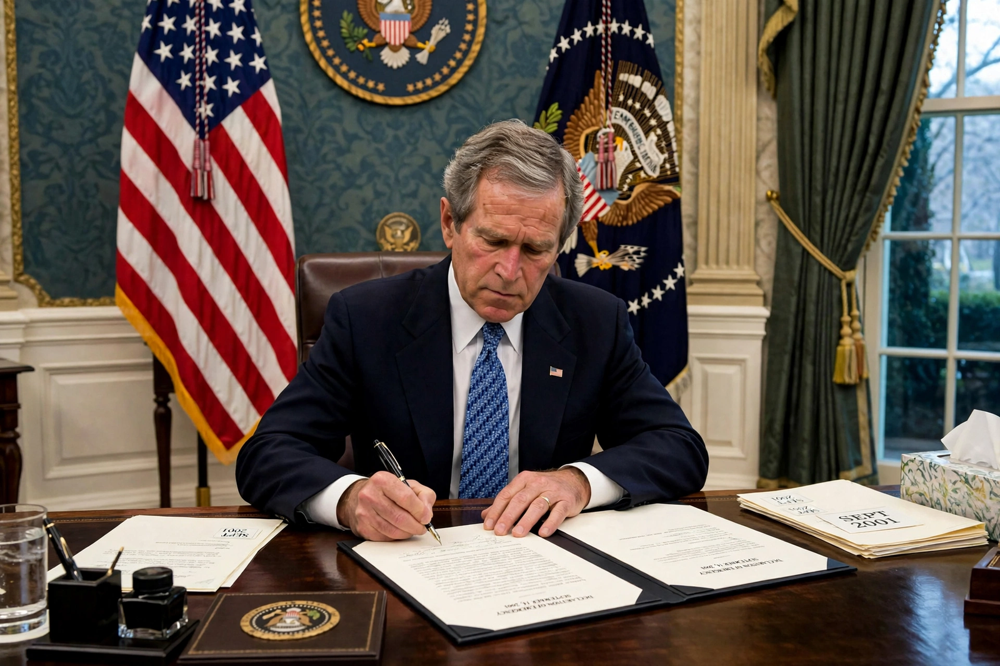

The Authorization for Use of Military Force (AUMF; Pub. L. 107-40, 115 Stat. 224) is a joint resolution of the United States Congress enacted on 18 September 2001, one week after the September 11 attacks. It authorises the President to use "all necessary and appropriate force" against those responsible for the attacks and those who harboured them. Successive administrations have interpreted its sixty words as legal authority for military operations across the globe in the "war on terror", making it one of the most consequential and debated war-powers measures in American history.
| Authorization for Use of Military Force | |
| Enacted by | 107th United States Congress |
|---|---|
| Citations | Public Law 107-40; 115 Stat. 224 |
| Passed | Senate 98–0; House 420–1 (14 September 2001) |
| Signed | President George W. Bush, 18 September 2001 |
| Sole "no" vote | Rep. Barbara Lee (D–CA) |

The AUMF was signed into law on 18 September 2001, a week after the 9/11 attacks.
"The President is authorized to use all necessary and appropriate force against those nations, organizations, or persons he determines planned, authorized, committed, or aided the terrorist attacks that occurred on September 11, 2001, or harbored such organizations or persons, in order to prevent any future acts of international terrorism against the United States by such nations, organizations or persons."
Congress passed the resolution almost unanimously three days after the attacks. The only dissenting vote in either chamber was cast by Representative Barbara Lee of California, who warned against granting an open-ended authorisation and urged that the resolution not become a blank cheque for endless war.
The AUMF was the legal basis for the invasion of Afghanistan in 2001 against al-Qaeda and the Taliban who harboured it. Executive-branch lawyers subsequently construed it to cover "associated forces" of al-Qaeda — a phrase appearing nowhere in the text — extending it to groups such as al-Qaeda in the Arabian Peninsula, al-Shabaab, and, from 2014, the Islamic State (ISIS), a group that had split from al-Qaeda. The executive branch has reported operations under the AUMF in countries including Afghanistan, Iraq, Syria, Yemen, Somalia, Libya and the Philippines, and it has been invoked in litigation over detention at Guantánamo Bay.
Critics across the political spectrum argue that the AUMF has been stretched far beyond its original purpose, delegating Congress's constitutional war-declaring power to the president indefinitely. Defenders in successive administrations have maintained that it remains necessary authority against evolving terrorist threats. The House of Representatives has voted several times to repeal or sunset the 2001 AUMF, and the Senate Foreign Relations Committee advanced a repeal in 2023, but as of the mid-2020s the authorisation remained in force. (Congress did repeal the separate 1957 and 1991 authorisations in earlier legislation, and the 2002 Iraq AUMF has been the subject of parallel repeal efforts.)